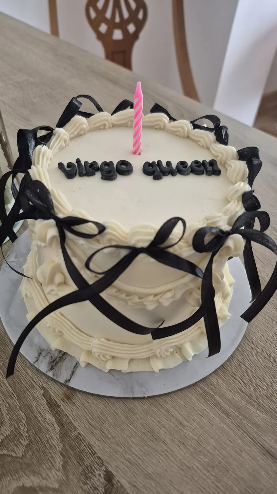
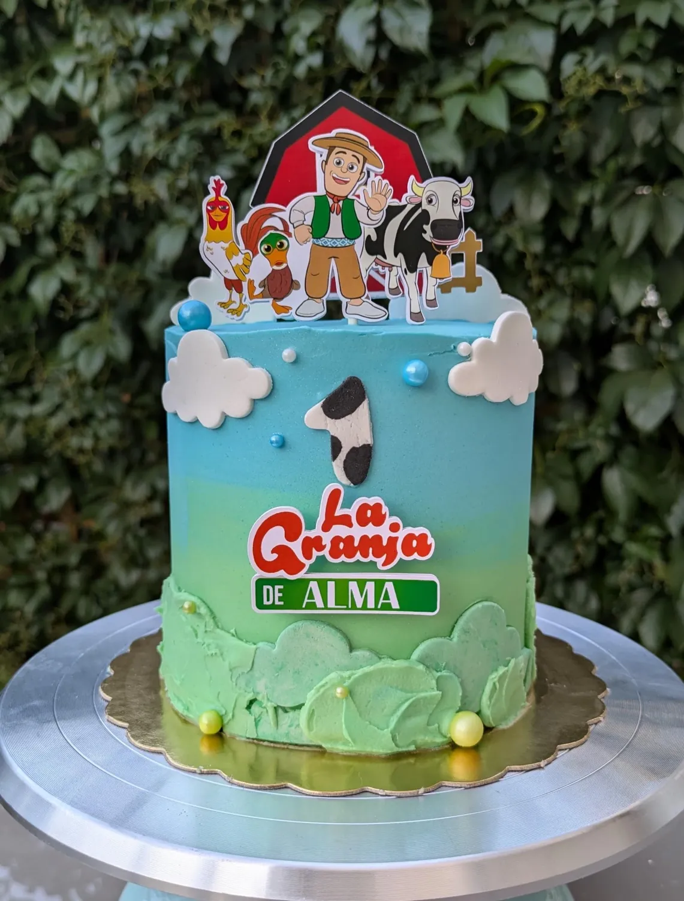
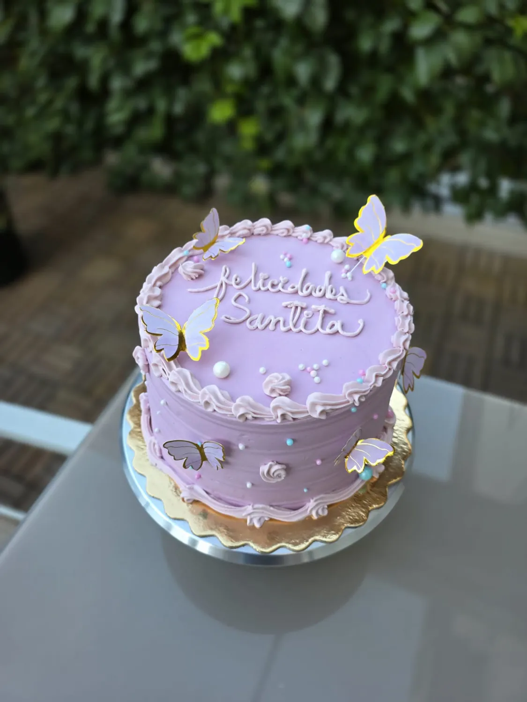
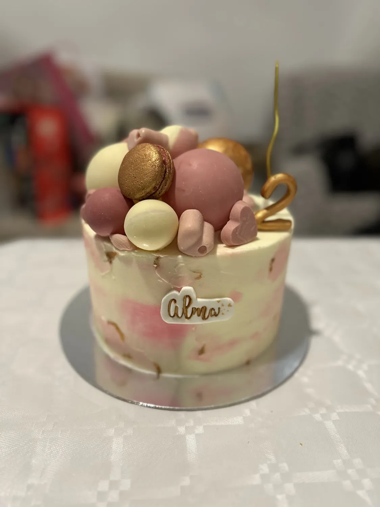
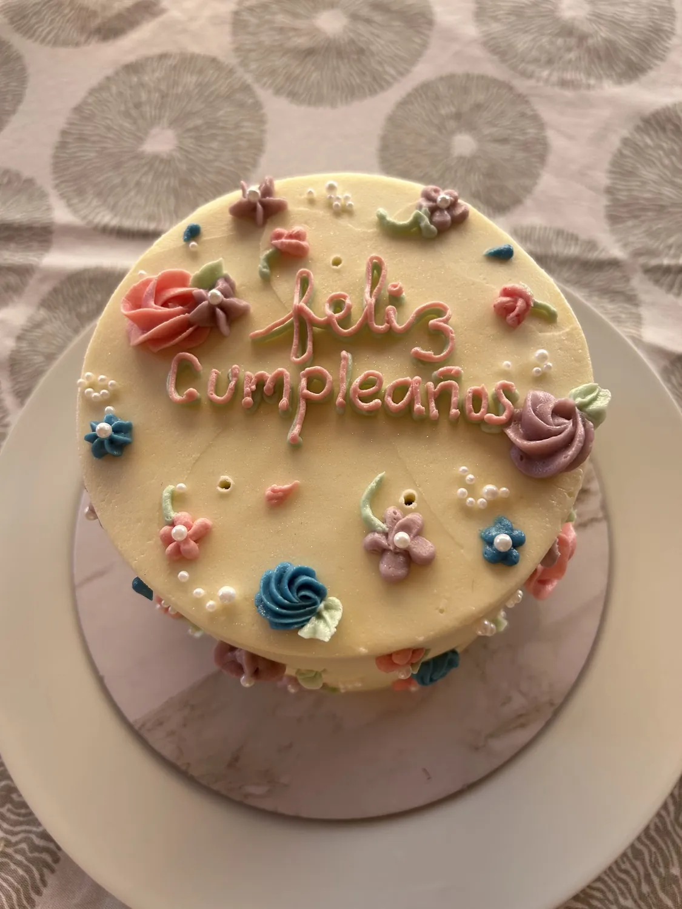
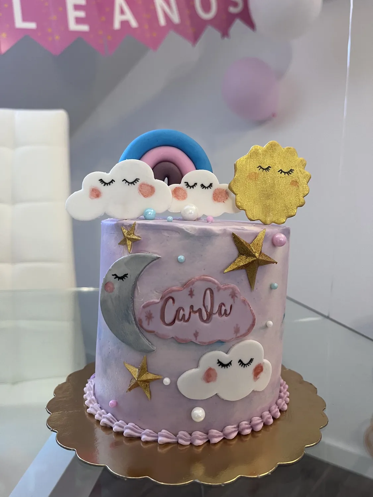
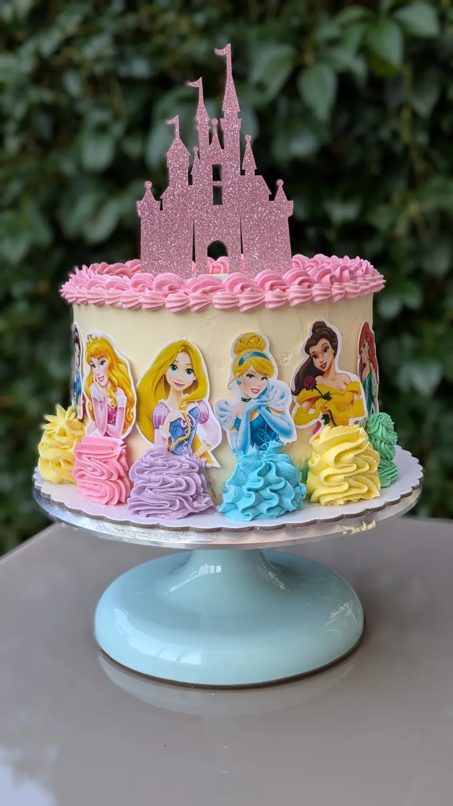
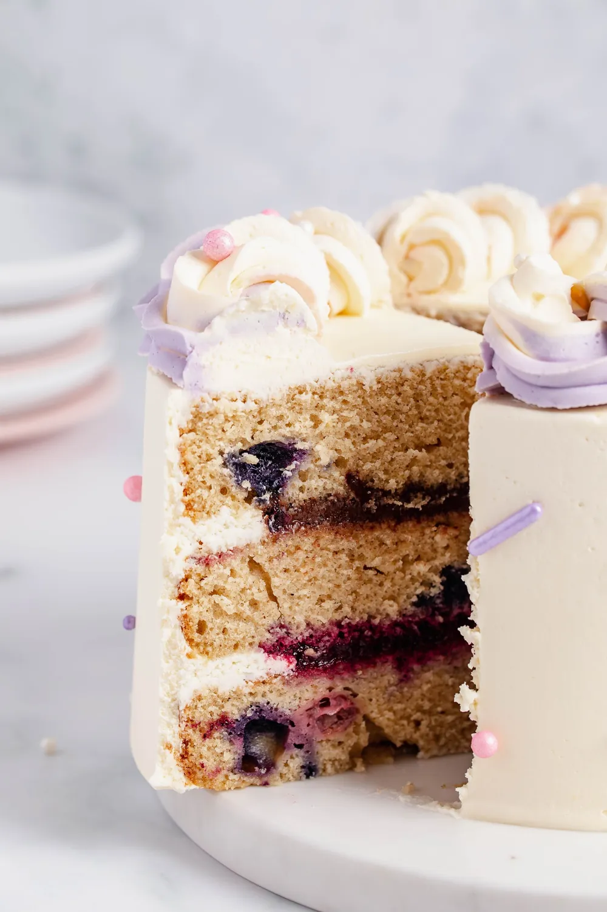

Cumpleaños
Desde la tarta clásica con su nombre escrito a mano hasta la que sorprende a quien la abre.
Aranjuez · Repostería artesanal
Cumpleaños, bodas, comuniones, tartas temáticas y opciones sin gluten. Me cuentas la idea y la hago realidad: diseño, sabores y cada detalle.

Cada tarta se hace una a unaQué hago
No hay dos iguales: la decoración se piensa para tu ocasión y los sabores se eligen contigo. Si hay una alergia o una intolerancia en casa, se puede adaptar.
Desde la tarta clásica con su nombre escrito a mano hasta la que sorprende a quien la abre.
Tartas de pisos, mesas dulces y postres para celebraciones que no se olvidan.
Diseños serenos, elegantes y con el detalle que hace que la mesa sea la protagonista.
Del dibujo que le vuelve loco, de su equipo o de su personaje favorito. Con figuras y colores.
Tartas y cupcakes sin gluten, con el mismo mimo y el mismo sabor que las demás.
Para completar la mesa o para regalar en el trabajo, en el colegio o en una boda.
Paso a paso
Sin tienda online ni formularios infinitos: hablamos, te enseño cómo quedaría y decidís con el presupuesto delante.
La ocasión, cuántos vais a ser, los sabores que os gustan y una foto de lo que habéis visto.
Te enseño cómo quedaría y cuánto cuesta, sin compromiso y sin sorpresas después.
Me avisas con unos días y se reserva el día con la señal que acordemos.
Pasas a recogerla por la pastelería o te la llevo, como te venga mejor.
Galería
Toca cualquiera para verla más grande.







Lo que dicen
★★★★★
«La tarta estaba buenísima, de las mejores que he probado nunca, y además quedó preciosa, se nota el cariño que pone en cada detalle. Comunicación fluida en todo momento y atención superagradable.»
★★★★★
«Necesitaba una tarta sin gluten para la fiesta de mi hijo, además de los cupcakes también sin gluten. Una profesional impecable, un trabajo hermoso cuidando cada detalle. Estaba todo muy rico.»
★★★★★
«Le encargué una tarta de cumpleaños y desde el primer momento la comunicación fue muy fluida. Le envié fotos de inspiración y cuando la vi… ¡increíble! El bizcocho muy húmedo y a todos les encantó.»
★★★★★
«Muy contenta con la tarta: además de ser bonita está muy rica. Gabriela es un encanto y se nota el cuidado que pone en su trabajo.»
★★★★☆
«Escogí los sabores, el diseño y todo sobre la tarta: desde el primer hola ha sido súper amable y atenta. Los sabores exquisitos, nos gustó a todos. Para otra celebración le escribiré.»
La pastelería
Estoy en el centro de Aranjuez. Si quieres ver las tartas de cerca, hablar de tu encargo o recoger el pedido, pásate por la tienda: te atiendo yo.
Para encargos, mejor por WhatsApp: así te contesto con el diseño y el precio.
Encargos
Rellena esto y se abrirá WhatsApp con el mensaje ya escrito: solo tienes que darle a enviar. Te contesto con el diseño y el presupuesto, sin compromiso.